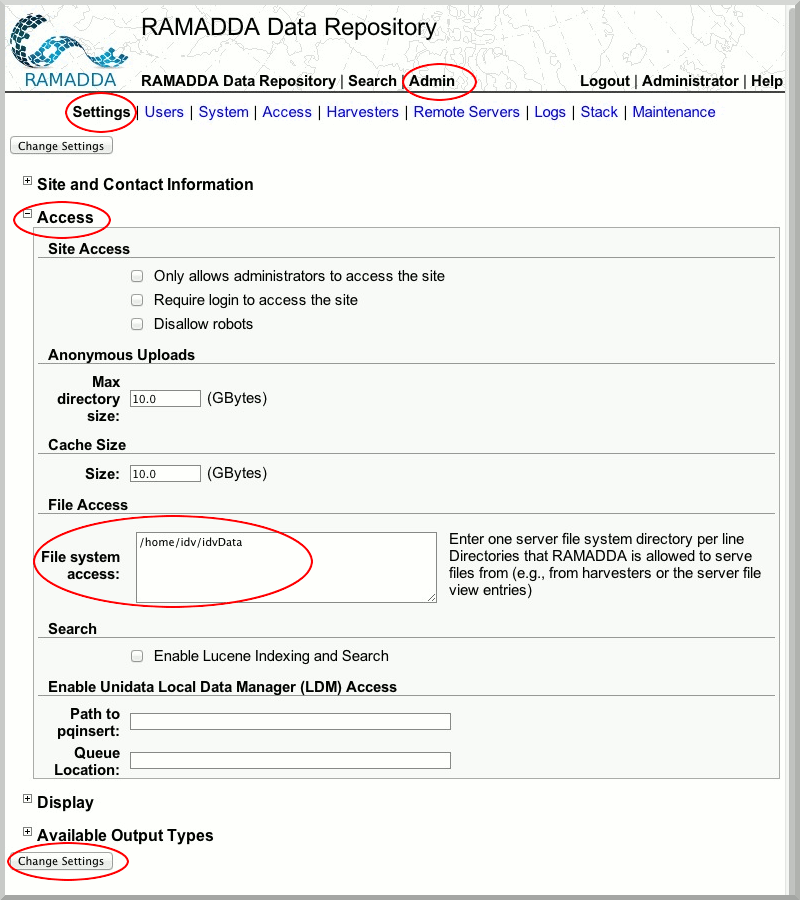
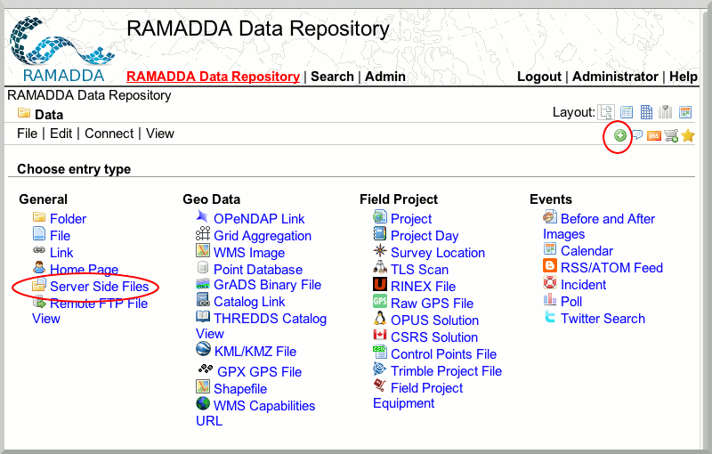
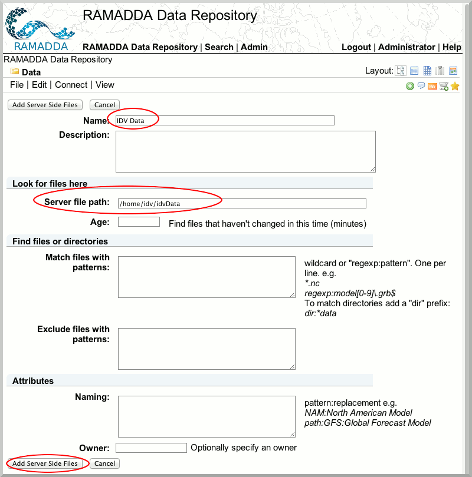

Publishing via Server-Side Publication
RAMADDA has the ability to provide a view of the file system on which RAMADDA is installed. In order give users this file system view, we must first provide RAMADDA with the permissions necessary to view the file system.
- Login with your admin credentials.
- Select the "Admin" tab and "Settings" sub-tab and open the "Access" Node. In the "File system access" area, enter the
/home/idv/idvData directory.

- Navigate to the RAMADDA data directory.
- Create new entry and select "Server Side Files".

- Supply a name and a "Server file path" of
/home/idv/idvData.

You now have a view of the file system you described above.